Sun Ultra 24 Server Build

Table of Contents
Background
Early last year, I went to my university’s surplus store. I was looking to purchase an old Mac Pro tower with the intent to do a case mod with it, since I knew the surplus store had a few available for cheap and I thought it would be a fun project. However, while looking around, I spotted a beautiful Sun Ultra 24 on the shelf. I quickly decided to purchase that instead for two reasons.
- The novelty value, as Sun Microsystems is long-gone.
- It has standard ATX parts, while a Mac Pro was going to require liberal application of a Dremel.
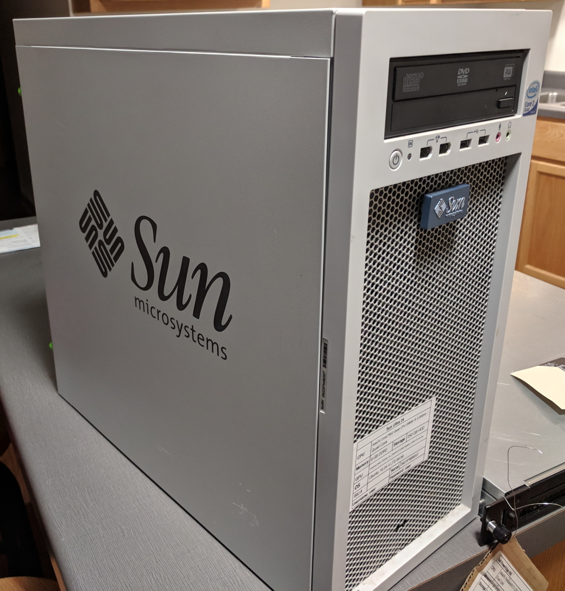
Build
Before I started my build, I did notice ServeTheHome’s build in the exact same case. While I like their build a lot, I also wanted to shoot for an as original appearance as possible with mine.
Pre-Build Configuration
I kind of forgot to take pictures before I gutted the case, so below is what a Sun Ultra 24 is supposed to look like. Mine looked about the same, except a lot more dust, scratches, and missing parts.
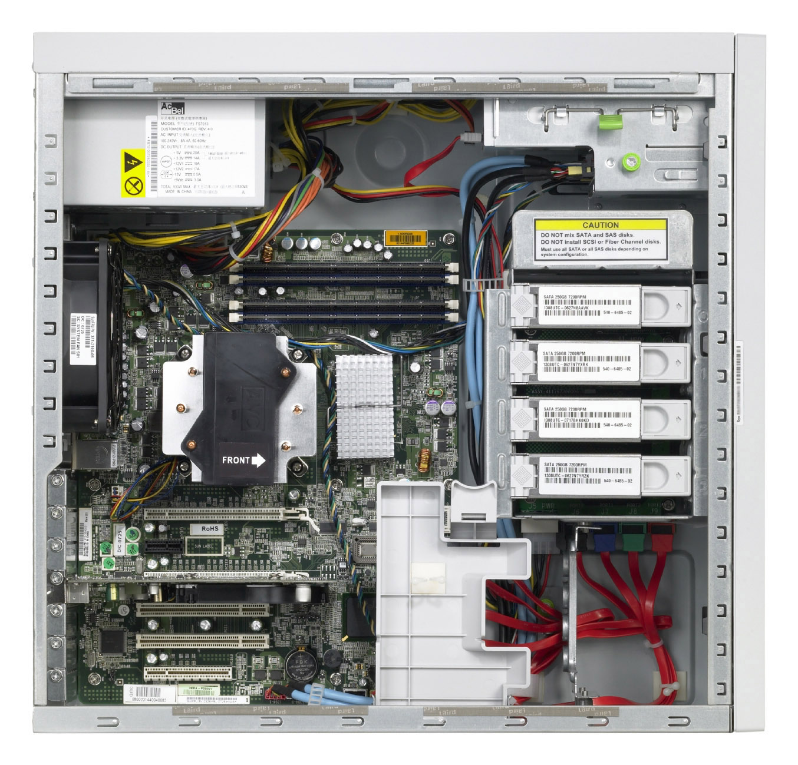
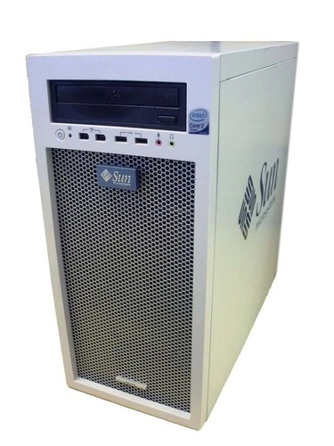
Parts
While I initially was planning on swapping out the components of my desktop into this case, I ended up building a server inside of it. I was getting real tired of the constant noise from my HP ProLiant DL 360 and thought it would be best to build a “new” machine. The perfect opportunity came during Black Friday this year with a Ryzen 7 2700x for $159.00. I decided replace my old i7-4790k with that, and use the old parts from my desktop to build a new server.
| Type | Item | Status |
|---|---|---|
| CPU | Intel Core i7-4790K 4 GHz Quad-Core Processor | Already Owned |
| CPU Cooler | Cooler Master Hyper 212 EVO 82.9 CFM Sleeve Bearing CPU Cooler | Purchased |
| Motherboard | Asus Z97-AR ATX LGA1150 Motherboard | Already Owned |
| Memory | Patriot Viper 3 Low Profile Blue 8 GB (2 x 4 GB) DDR3-1600 Memory | Already Owned |
| Memory | Patriot Viper 3 Low Profile Black 8 GB (2 x 4 GB) DDR3-1600 Memory | Already Owned |
| Storage | Western Digital Caviar Blue 320 GB 3.5” 7200RPM Internal Hard Drive | Purchased |
| Power Supply | EVGA BR 450 W 80+ Bronze Certified ATX Power Supply | Purchased |
| Case | Sun Ultra 24 | Already Owned |
I also liberated the 4-port gigabit network card from my ProLiant.
Post-Build Configuration
Here’s the result, since I also forgot to take pictures during the build.
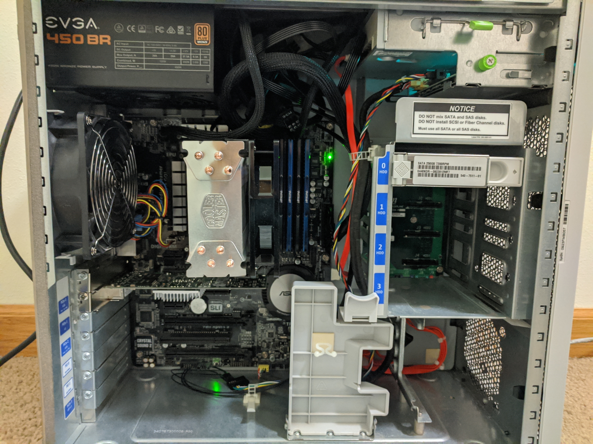
I know there’s a mess of power supply cables at the top, but there’s no window on this case so I don’t care.
Problems
Oh my goodness, this was the most frustrating computer build I have ever done. There were so many problems. Some, I had the foresight to anticipate. Some, not. Here they are in no particular order.
Power Supply Cable Length
I was initially hoping to use the power supply that came with the computer since it was a perfectly adequate 530W supply. Unfortunately, it was made specifically for that chassis, and the 24-pin ATX power cable was about 3 inches too short. Thankfully, I had already purchased a new EVGA 450W power supply in the event I wasn’t able to use the old power supply.
Power Supply Orientation
This wasn’t really a problem, but I was surprised that unlike most modern cases, the power supply only fits one direction. Thankfully, I didn’t have the problem that ServeTheHome did with their power supply.
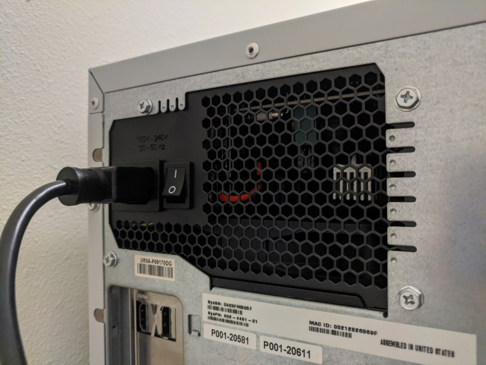
Motherboard Rubber Spacer
Unfortunately, I didn’t get a picture of this, but behind the motherboard are two rubber spacers. Well, with a new Hyper 212 EVO installed, one of these rubber spacers interferes with the mounting bracket. Thankfully, it was easily ripped off.
Front Panel Connector Cables
Most of the front panel connectors ended up being useless. My motherboard doesn’t even have FireWire headers so I removed those cables completely. The USB header cable was barely long enough, but made it. On the other hand, the audio header cable was nowhere near long enough. However, since I was only planning on using this machine as a server, and this motherboard already had some audio issues from a previous ESD incident, I decided to just remove this cable too.
Missing PCIe Slot Covers
I already knew about this when I bought the system, but it was missing some PCIe slot covers. Since I don’t like missing pieces, I bought some spares on Amazon, but unfortunately they don’t quite match.
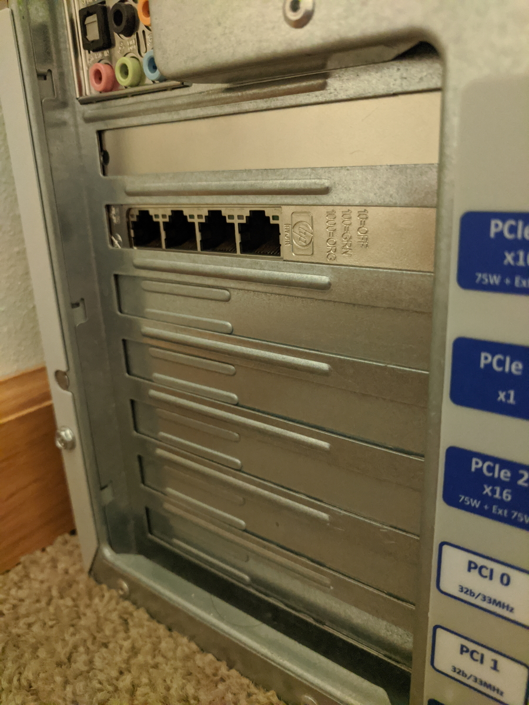
Missing Drive Sleds
I was also disappointed when I bought the system that either the computer never came with all the drive sleds, or they were removed at some point. Either way, if I ever want to add more hard drives, I’ll need to source some from eBay or something. I haven’t purchased any yet, since the cost of them would nearly equal what I paid for the original computer.
Missing Ultra 24 Badge
As you can see in the old exterior photo, at the bottom, the Ultra 24 badge is missing. I’m going to try and 3D print a replacement at some point.
Fan Noise
The whole point of this build was to have a quieter computer. I quickly discovered that the rear case fan is bloody loud, which defeated the entire purpose of this project. This fan has a very weird mount which doesn’t make it easy to just replace with a new fan.
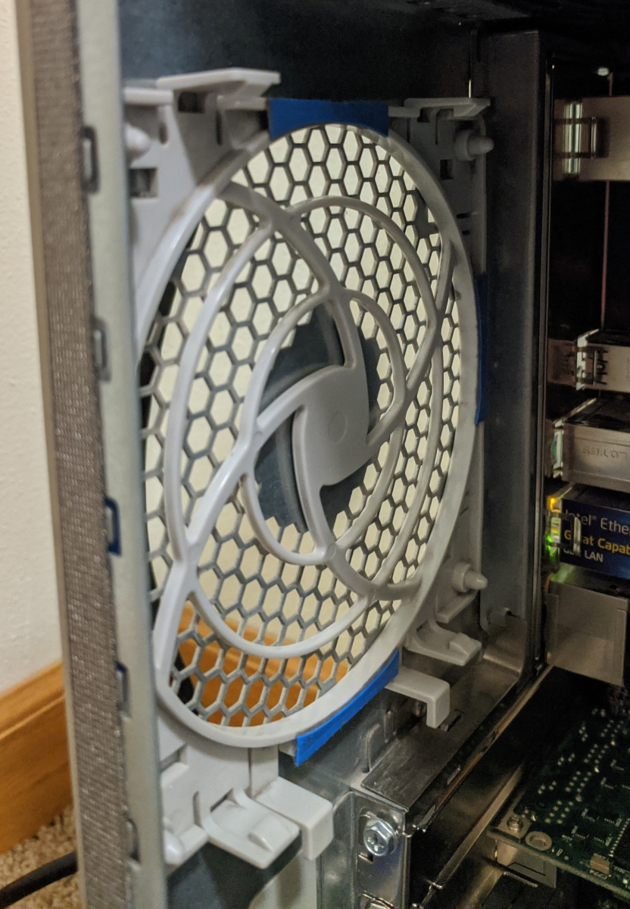
Thankfully, I was able to go into the BIOS and disable the fan until the CPU reaches a pretty high temperature. Otherwise, I was just going to unplug it. With the minimal CPU load of this machine, and the Hyper 212 EVO cooling the processor, the fan has yet to come on.
Front Panel Header
This was the worst thing by far. I hadn’t realized that the front panel header (power switch, power LED, etc.) is not standardized.
This is the front panel header for the Sun Ultra 24.
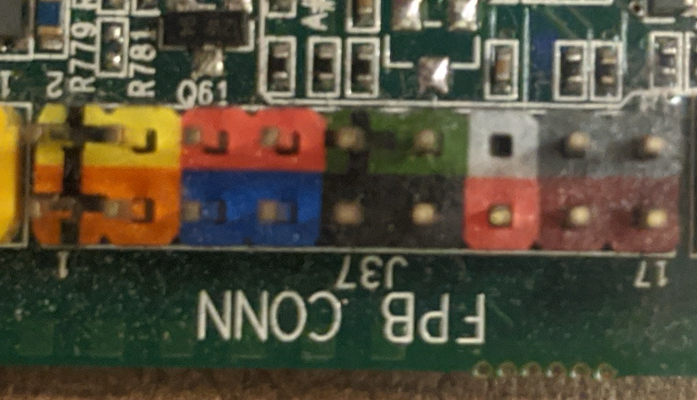
This is the front panel header for my Asus Z97-AR.
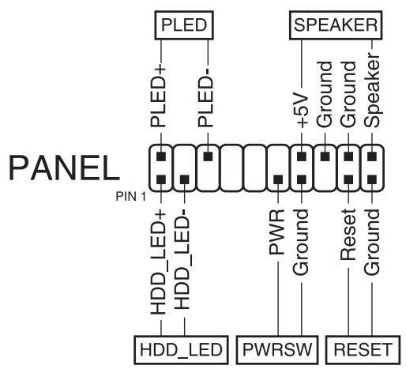
As you can see, the Asus motherboard header is wider than the Ultra 24. In order to rectify this, I bought some jumper wire extensions from Amazon and used some trial-and-error and help from this forum post to connect everything.
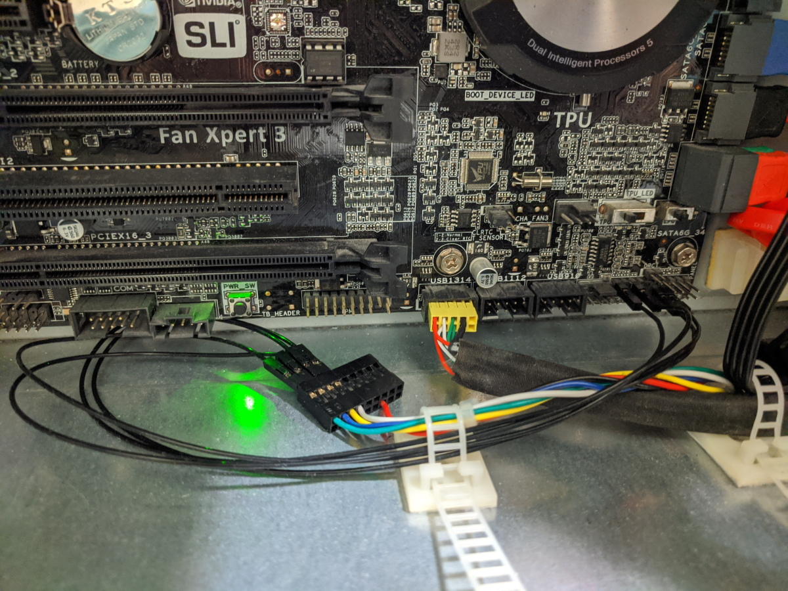
It’s ugly but it works.
Here is the pinout I figured out for reference:
| Ultra 24 | Connection |
|---|---|
| Red | Probably +12V |
| Black | Probably GND |
| Green | PWR LED + |
| Blue | PWR LED - |
| Yellow | PWR SW |
| White | PWR SW |
The power switch is just shorting two pins, so positive versus negative doesn’t matter.
Conclusion
Overall, I’m happy with the build. Despite all the problems, it has ended up working well, and it’s nearly dead-silent. My only complaint is the power LED is incredibly bright, especially at night. I had some problems transferring my data from my old server to it, but that’s beyond the scope of this post.
I’m very glad I didn’t transfer my desktop into this case, with the number of problems I encountered. How tight the case is, the lack of cable management, no 2.5” drive support (for my SSD), only one 5.25” bay, etc. would have all been major challenges.
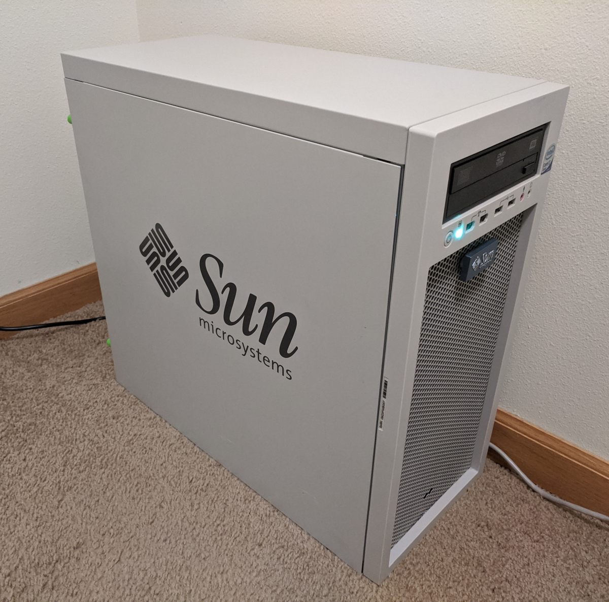